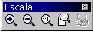

Next: Manejo de archivos
Up: Crear
Previous: Cambio de dimensiones
Índice General
Además del cuadro de diálogo Escala, en Image se dispone de la barra de herramientas Escala para modificar
el tamaño con que se ve la imagen en pantalla. De las opciones disponibles, la única que muestra la imagen
como es exactamente es la opción 1:1, con la que cada punto de la imagen se representa con un píxel
de la pantalla.
Figura 5.51:
Barra de escala
|

|
5.51
Proyecto Cursos - LuCAS - http://lucas.hispalinux.es/htmls/cursos.html